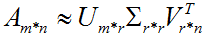

特征值分解、奇异值分解、PCA概念
本文将分别介绍特征值分解、奇异值分解、及PCA的相关理论概念。末尾将给出Householder矩阵变换、QR算法求解特征值、特征向量的代码
其中，特征值分解、奇异值分解的相关内容，转载自：点我
一、特征值与特征向量的几何意义
1. 矩阵乘法
在介绍特征值与特征向量的几何意义之前，先介绍矩阵乘法的几何意义。
矩阵乘法对应了一个变换，是把任意一个向量变成另一个方向或长度的新向量。在这个变化过程中，原向量主要发生旋转、伸缩的变化。如果矩阵对某些向量只发生伸缩变换，不产生旋转效果，那么这些向量就称为这个矩阵的特征向量，伸缩的比例就是特征值。
比如：，它对应的线性变换是下面的形式形式：
因为，这个矩阵乘以一个向量(x,y)的结果是：。由于矩阵M是对称的，所以这个变换是一个对 x , y 轴的一个拉伸变换。【当M中元素值大于1时，是拉伸；当值小于1时，是缩短】
那么如果矩阵M不是对称的，比如：，它所描述的变换如下图所示：
这其实是在平面上对一个轴进行的拉伸变换【如蓝色箭头所示】，在图中蓝色箭头是一个最主要的变化方向。变化方向可能有不止一个，但如果我们想要描述好一个变换，那我们就描述好这个变换主要的变化方向就好了。
2. 特征值分解与特征向量
如果说一个向量v是方阵A的特征向量，将一定可以表示成下面的形式：

λ为特征向量 v 对应的特征值。特征值分解是将一个矩阵分解为如下形式：
若(x1,x2,...,xn)可逆，则左右两边都求逆，则方阵A可直接通过特征值和特征向量进行唯一的表示，令
Q=(x1,x2,...,xn)
Σ = diag(λ1, λ2, ..., λn)
则 ，该表达式称为方阵的特征值分解。
其中，Q是这个矩阵A的特征向量组成的矩阵，Σ是一个对角矩阵，每一个对角线元素就是一个特征值，里面的特征值是由大到小排列的，这些特征值所对应的特征向量就是描述这个矩阵变化方向（从主要的变化到次要的变化排列）。也就是说矩阵A的信息可以由其特征值和特征向量表示。
一个变换方阵的所有特征向量组成了这个变换矩阵的一组基。所谓基，可以理解为坐标系的轴。我们平常用到的大多是直角坐标系，在线性代数中可以把这个坐标系扭曲、拉伸、旋转，称为基变换。我们可以按需求去设定基，但是基的轴之间必须是线性无关的，也就是保证坐标系的不同轴不要指向同一个方向或可以被别的轴组合而成，否则的话原来的空间就“撑”不起来了。从线性空间的角度看，在一个定义了内积的线性空间里，对一个N阶对称方阵进行特征分解，就是产生了该空间的N个标准正交基，然后把矩阵投影到这N个基上。N个特征向量就是N个标准正交基，而特征值的模则代表矩阵在每个基上的投影长度。特征值越大，说明矩阵在对应的特征向量上的方差越大，功率越大，信息量越多。
对于矩阵为高维的情况下，那么这个矩阵就是高维空间下的一个线性变换。可以想象，这个变换也同样有很多的变换方向，我们通过特征值分解得到的前N个特征向量，那么就对应了这个矩阵最主要的N个变化方向。我们利用这前N个变化方向，就可以近似这个矩阵（变换）。
在机器学习特征提取中，意思就是最大特征值对应的特征向量方向上包含最多的信息量，如果某几个特征值很小，说明这几个方向信息量很小，可以用来降维，也就是删除小特征值对应方向的数据，只保留大特征值方向对应的数据，这样做以后数据量减小，但有用信息量变化不大，PCA降维就是基于这种思路。
总结一下，特征值分解可以得到特征值与特征向量，特征值表示的是这个特征到底有多重要，而特征向量表示这个特征是什么。不过，特征值分解也有很多的局限，比如说变换的矩阵必须是方阵。
二、奇异值分解
1. 奇异值
特征值分解是一个提取矩阵特征很不错的方法，但是它只是对方阵而言的，在现实的世界中，我们看到的大部分矩阵都不是方阵，比如说有N个学生，每个学生有M科成绩，这样形成的一个N * M的矩阵就不可能是方阵，我们怎样才能描述这样普通的矩阵呢的重要特征呢？奇异值分解可以用来干这个事情，奇异值分解是一个能适用于任意的矩阵的一种分解的方法：
分解形式：
假设A是一个M * N的矩阵，那么得到的U是一个M * M的方阵（称为左奇异向量），Σ是一个M * N的对角矩阵（除了对角线的元素都是0，对角线上的元素称为奇异值），VT(V的转置)是一个N * N的矩阵（称为右奇异向量）。
2. 奇异值与特征值
那么奇异值和特征值是怎么对应起来的呢？我们将一个矩阵A的转置乘以 A，并对(ATA)求特征值，则有下面的形式：
这里V就是上面的右奇异向量，另外还有：
这里的σ就是奇异值，u就是上面说的左奇异向量。
奇异值σ跟特征值类似，在矩阵Σ中也是从大到小排列，而且σ的减少特别的快，在很多情况下，前10%甚至1%的奇异值的和就占了全部的奇异值之和的99%以上了。也就是说，我们也可以用前r（ r远小于m、n ）个的奇异值来近似描述矩阵，即部分奇异值分解：

右边的三个矩阵相乘的结果将会是一个接近于A的矩阵，在这儿，r越接近于n，则相乘的结果越接近于A。
SVD分解相对于特征值分解的优势就是：
- 分解的矩阵可以是任意矩阵
- 在恢复信号的时候左右奇异值可以选择不同的维度
另外值得注意的一点：不论是奇异值分解还是特征值分解，分解出来的特征向量都是正交的。
3. SVD分解的数学推演
A = UΣVT 可以推导出
AAT = (UΣVT)(VΣUT) = U(ΣΣT)UT
UTAATU = ΣΣT
ΣΣT 依然是对角矩阵，U,V是正交矩阵
所以 ΣΣT 是AAT的相似对角矩阵，Σ对角元是AAT的特征值的平方根，称为矩阵A的奇异值
类似 V 由 ATA的特征向量构成，称为A的右奇异向量
4. 示范SVD分解用于图片数据压缩
1
2
3
4
5
6
7
8
9
10
11
12
13
14
15
16
17
18
19
20
21
22
23
24
25
26
27
28
29
30
31
32
33
34
35
36
37
38
39
40 | # 下面的范例示范SVD分解用于图片数据压缩。
%matplotlib inline
%config InlineBackend.figure_format = 'svg'
import numpy as np
from matplotlib import pyplot as plt
from skimage import data
def compressBySVD(img,r):
u,s,vt = np.linalg.svd(img)
ur = u[:,0:r]
sr = s[0:r]
vtr = vt[0:r,:]
return (ur,sr,vtr)
def rebuildFromSVD(ur,sr,vtr):
img = ur@np.diag(sr)@vtr
return(img)
img = data.camera()/255.0
plt.figure(figsize=(10,8))
for i,r in enumerate([5,10,20,30,40,50,100,200],start = 1):
ur,sr,vtr = compressBySVD(img,r)
compress_ratio = (np.product(ur.shape) + len(sr) +
np.product(vtr.shape))/np.product(img.shape)
img_rebuild = rebuildFromSVD(ur,sr,vtr)
ax=plt.subplot(3,3,i)
ax.imshow(img_rebuild,cmap = "gray")
ax.set_title("r=%d"%r+", compress_ratio=%.2f"%compress_ratio)
ax.set_xticks([])
ax.set_yticks([])
ax = plt.subplot(3,3,9)
ax.imshow(img,cmap = "gray")
ax.set_title("r = 512, original image")
ax.set_xticks([])
ax.set_yticks([])
plt.show()
|
三、PCA主成份分析
主成分分析(PrincipalComponents Analysis。即PCA，也称为K-L变换)，是图像压缩中的一种最优正交变换。PCA用于统计特征提取构成了子空间法模式识别的基础。它从图像整体代数特征出发，基于图像的总体信息进行分类识别。PCA的核心思想是利用较少数量的特征对样本进行描述以达到降低特征空间维数的目的。
1. PCA理论
给定一副NN大小图像，将它表示成一个N21维向量，向量中元素为像素点灰度，按行存储，如下列公式分别表示第i张图片和n张图片平均值：
令N2*n矩阵X为：
注意，矩阵减去平均值相当于将坐标系原点移动到平均值位置。
设Q=XXT，则Q是一个N2* N2矩阵：
,Q是方阵
,Q是对称矩阵。
,Q被成为协方差矩阵，
,Q的数据量非常庞大
那么，X中的每个元素xj可以被如下表达：
其中,ei是Q中非零特征值对应的特征向量。由特征向量e1,e2,…,en组成的空间叫做特征空间。对于NN图像，e1,e2,…,en是N21维相互正交的向量。尺度gji是xj在空间中的坐标。
2. 实现PCA
为了降维，可以对特征值设定阈值或按照其他准则，寻找协方差矩阵Q中前k个特征向量。这里Q十分庞大，对于一副256256的图像，Q的大小为6553665536！替代方案是，考虑矩阵
.P和Q都是对称矩阵
.P≠QT
.Q的大小是N2N2，而P大小为nn
.n为训练样本图像数量，通常n<<N
设e是矩阵P的特征值λ对应的特征向量，则有：
这里，X*e也是矩阵Q的特征值λ对应的特征向量【这是用求特征值分解方法，下面介绍用SVD方法】
3. PCA与奇异值分解SVD
任何一个m*n矩阵都能进行奇异值分解，拆分为3个矩阵相乘的形式。由于SVD得出的奇异向量也是从奇异值由大到小排列的，按PCA的观点来看，就是方差最大的坐标轴就是第一个奇异向量，方差次大的坐标轴就是第二个奇异向量…。我们可以对Q进行奇异值分解。
.U就是QQT的特征向量
.V就是QTQ的特征向量
.D中奇异值的平方就是QQT和QTQ的特征值
上面讲了一大堆，就是为了下一篇PCA人脸识别做铺垫的，给你一副图像，要从图像库中得到匹配的图像，怎么弄？如果是两两做像素点比较是不可能完成的任务，时间上废掉了。如果用其他特征点代替也许可以，但容易漏检吧，这边不扩展。我们必须对图像数据的协方差矩阵进行降维，所以用到了PCA。
而具体如何实现PCA呢？关键是特征值及相应特征向量的求取。matlab有个eig函数，opencv也有相应的函数。由于不想被别人牵制，我自己查了资料，发现QR算法可以用来求实对称矩阵的全部特征值和特征向量。【雅可比算法也可以，就是速度太慢了；而上面介绍的SVD实现PCA还没见过，文献上说SVD和PCA是等价的】
以下内容，来自《C常用算法程序集第二版》，这绝对是搞科研的好书！
在用QR算法求解特征值和向量之前，必须将实对称矩阵转化为三对角矩阵。【由于我们的协方差矩阵是实对称矩阵，因此不用转化为Hessen berg矩阵，QR算法是一个迭代的过程，具体算法太长了，我不贴出来了，有需要的，自己去下载这本书的PDF文档或其他资料】
1.约化对称矩阵为三对角矩阵的Householder变换法：
例：
【其他高维矩阵也行，大家可以把数据存在txt文本中，然后读取进来】
代码：
1
2
3
4
5
6
7
8
9
10
11
12
13
14
15
16
17
18
19
20
21
22
23
24
25
26
27
28
29
30
31
32
33
34
35
36
37
38
39
40
41
42
43
44
45
46
47
48
49
50
51
52
53
54
55
56
57
58
59
60
61
62
63
64
65
66
67
68
69
70
71
72
73
74
75
76
77
78
79
80
81
82
83
84
85
86
87
88
89
90
91
92
93
94
95
96
97
98
99
100
101
102
103
104
105
106
107
108
109
110
111
112
113
114
115
116
117
118
119
120
121
122 | // HouseHolder_Transform.cpp : 定义控制台应用程序的入口点。
//
#include "stdafx.h"
#include "math.h"
void cstrq(double a[],int n,double q[],double b[],double c[]);
int _tmain(int argc, _TCHAR* argv[])
{
int i,j;
static double b[5],c[5],q[25];
static double a[25] = {10.0,1.0,2.0,3.0,4.0,1.0,9.0,-1.0,2.0,-3.0,2.0,-1.0,7.0,3.0,-5.0,3.0,2.0,3.0,12.0,-1.0,4.0,-3.0,-5.0,-1.0,15.0};
cstrq(a,5,q,b,c);
printf("MAT A is:\n");
for (i=0;i<5;i++)
{
for (j=0;j<5;j++)
{
printf("%13.7e ",a[i*5+j]);
}
printf("\n");
}
printf("\n");
printf("MAT Q is:\n");
for (i=0;i<5;i++)
{
for (j=0;j<5;j++)
{
printf("%13.7e ",q[i*5+j]);
}
printf("\n");
}
printf("\n");
printf("MAT B is:\n");
for (i=0;i<5;i++)
{
printf("%13.7e ",b[i]);
}
printf("\n\n");
printf("MAT C is:\n");
for (i=0;i<5;i++)
{
printf("%13.7e ",c[i]);
}
printf("\n\n");
return 0;
}
void cstrq(double a[],int n,double q[],double b[],double c[])
{
int i,j,k,u,v;
double h,f,g,h2;
for (i=0; i<=n-1; i++)
for (j=0; j<=n-1; j++)
{ u=i*n+j; q[u]=a[u];}
for (i=n-1; i>=1; i--)
{ h=0.0;
if (i>1)
for (k=0; k<=i-1; k++)
{ u=i*n+k; h=h+q[u]*q[u];}
if (h+1.0==1.0)
{ c[i]=0.0;
if (i==1) c[i]=q[i*n+i-1];
b[i]=0.0;
}
else
{ c[i]=sqrt(h);
u=i*n+i-1;
if (q[u]>0.0) c[i]=-c[i];
h=h-q[u]*c[i];
q[u]=q[u]-c[i];
f=0.0;
for (j=0; j<=i-1; j++)
{ q[j*n+i]=q[i*n+j]/h;
g=0.0;
for (k=0; k<=j; k++)
g=g+q[j*n+k]*q[i*n+k];
if (j+1<=i-1)
for (k=j+1; k<=i-1; k++)
g=g+q[k*n+j]*q[i*n+k];
c[j]=g/h;
f=f+g*q[j*n+i];
}
h2=f/(h+h);
for (j=0; j<=i-1; j++)
{ f=q[i*n+j];
g=c[j]-h2*f;
c[j]=g;
for (k=0; k<=j; k++)
{ u=j*n+k;
q[u]=q[u]-f*c[k]-g*q[i*n+k];
}
}
b[i]=h;
}
}
for (i=0; i<=n-2; i++) c[i]=c[i+1];
c[n-1]=0.0;
b[0]=0.0;
for (i=0; i<=n-1; i++)
{ if ((b[i]!=0.0)&&(i-1>=0))
for (j=0; j<=i-1; j++)
{ g=0.0;
for (k=0; k<=i-1; k++)
g=g+q[i*n+k]*q[k*n+j];
for (k=0; k<=i-1; k++)
{ u=k*n+j;
q[u]=q[u]-g*q[k*n+i];
}
}
u=i*n+i;
b[i]=q[u]; q[u]=1.0;
if (i-1>=0)
for (j=0; j<=i-1; j++)
{ q[i*n+j]=0.0; q[j*n+i]=0.0;}
}
return;
}
|
计算结果：
即上述计算结果返回的三对角阵T为：

2.下面，我们将在三对角矩阵的基础上使用QR算法计算全部特征值和特征向量
例，同样对上面那个5阶矩阵，先求三对角矩阵，再求其全部特征值和特征向量
最大迭代次数为60，误差为0.000001
代码：
1
2
3
4
5
6
7
8
9
10
11
12
13
14
15
16
17
18
19
20
21
22
23
24
25
26
27
28
29
30
31
32
33
34
35
36
37
38
39
40
41
42
43
44
45
46
47
48
49
50
51
52
53
54
55
56
57
58
59
60
61
62
63
64
65
66
67
68
69
70
71
72
73
74
75
76
77
78
79
80
81
82
83
84
85
86
87
88
89
90
91
92
93
94
95
96
97
98
99
100
101
102
103
104
105
106
107
108
109
110
111
112
113
114
115
116
117
118
119
120
121
122
123
124
125
126
127
128
129
130
131
132
133
134
135
136
137
138
139
140
141
142
143
144
145
146
147
148
149
150
151
152
153
154
155
156
157
158
159
160
161
162
163
164
165
166
167
168
169
170
171
172
173
174
175
176
177
178
179
180
181
182
183
184
185
186
187 | #include "stdafx.h"
#include "math.h"
void cstrq(double a[],int n,double q[],double b[],double c[]);
int csstq(int n,double b[],double c[],double q[],double eps,int l);
int _tmain(int argc, _TCHAR* argv[])
{
int i,j,k,l=60;
static double b[5],c[5],q[25];
static double a[25] = {10.0,1.0,2.0,3.0,4.0,1.0,9.0,-1.0,2.0,-3.0,2.0,-1.0,7.0,3.0,-5.0,3.0,2.0,3.0,12.0,-1.0,4.0,-3.0,-5.0,-1.0,15.0};
double eps = 0.000001;
cstrq(a,5,q,b,c);
k = csstq(5,b,c,q,eps,l);
printf("MAT A is:\n");
for (i=0;i<5;i++)
{
for (j=0;j<5;j++)
{
printf("%13.7e ",a[i*5+j]);
}
printf("\n");
}
printf("\n");
printf("MAT B is:\n");
for (i=0;i<5;i++)
{
printf("%13.7e ",b[i]);
}
printf("\n\n");
printf("MAT Q is:\n");
for (i=0;i<5;i++)
{
for (j=0;j<5;j++)
{
printf("%13.7e ",q[i*5+j]);
}
printf("\n");
}
printf("\n");
return 0;
}
void cstrq(double a[],int n,double q[],double b[],double c[])
{
int i,j,k,u,v;
double h,f,g,h2;
for (i=0; i<=n-1; i++)
for (j=0; j<=n-1; j++)
{ u=i*n+j; q[u]=a[u];}
for (i=n-1; i>=1; i--)
{ h=0.0;
if (i>1)
for (k=0; k<=i-1; k++)
{ u=i*n+k; h=h+q[u]*q[u];}
if (h+1.0==1.0)
{ c[i]=0.0;
if (i==1) c[i]=q[i*n+i-1];
b[i]=0.0;
}
else
{ c[i]=sqrt(h);
u=i*n+i-1;
if (q[u]>0.0) c[i]=-c[i];
h=h-q[u]*c[i];
q[u]=q[u]-c[i];
f=0.0;
for (j=0; j<=i-1; j++)
{ q[j*n+i]=q[i*n+j]/h;
g=0.0;
for (k=0; k<=j; k++)
g=g+q[j*n+k]*q[i*n+k];
if (j+1<=i-1)
for (k=j+1; k<=i-1; k++)
g=g+q[k*n+j]*q[i*n+k];
c[j]=g/h;
f=f+g*q[j*n+i];
}
h2=f/(h+h);
for (j=0; j<=i-1; j++)
{ f=q[i*n+j];
g=c[j]-h2*f;
c[j]=g;
for (k=0; k<=j; k++)
{ u=j*n+k;
q[u]=q[u]-f*c[k]-g*q[i*n+k];
}
}
b[i]=h;
}
}
for (i=0; i<=n-2; i++) c[i]=c[i+1];
c[n-1]=0.0;
b[0]=0.0;
for (i=0; i<=n-1; i++)
{ if ((b[i]!=0.0)&&(i-1>=0))
for (j=0; j<=i-1; j++)
{ g=0.0;
for (k=0; k<=i-1; k++)
g=g+q[i*n+k]*q[k*n+j];
for (k=0; k<=i-1; k++)
{ u=k*n+j;
q[u]=q[u]-g*q[k*n+i];
}
}
u=i*n+i;
b[i]=q[u]; q[u]=1.0;
if (i-1>=0)
for (j=0; j<=i-1; j++)
{ q[i*n+j]=0.0; q[j*n+i]=0.0;}
}
return;
}
int csstq(int n,double b[],double c[],double q[],double eps,int l)
{
int i,j,k,m,it,u,v;
double d,f,h,g,p,r,e,s;
c[n-1]=0.0; d=0.0; f=0.0;
for (j=0; j<=n-1; j++)
{ it=0;
h=eps*(fabs(b[j])+fabs(c[j]));
if (h>d) d=h;
m=j;
while ((m<=n-1)&&(fabs(c[m])>d)) m=m+1;
if (m!=j)
{ do
{ if (it==l)
{ printf("fail\n");
return(-1);
}
it=it+1;
g=b[j];
p=(b[j+1]-g)/(2.0*c[j]);
r=sqrt(p*p+1.0);
if (p>=0.0) b[j]=c[j]/(p+r);
else b[j]=c[j]/(p-r);
h=g-b[j];
for (i=j+1; i<=n-1; i++)
b[i]=b[i]-h;
f=f+h; p=b[m]; e=1.0; s=0.0;
for (i=m-1; i>=j; i--)
{ g=e*c[i]; h=e*p;
if (fabs(p)>=fabs(c[i]))
{ e=c[i]/p; r=sqrt(e*e+1.0);
c[i+1]=s*p*r; s=e/r; e=1.0/r;
}
else
{ e=p/c[i]; r=sqrt(e*e+1.0);
c[i+1]=s*c[i]*r;
s=1.0/r; e=e/r;
}
p=e*b[i]-s*g;
b[i+1]=h+s*(e*g+s*b[i]);
for (k=0; k<=n-1; k++)
{ u=k*n+i+1; v=u-1;
h=q[u]; q[u]=s*q[v]+e*h;
q[v]=e*q[v]-s*h;
}
}
c[j]=s*p; b[j]=e*p;
}
while (fabs(c[j])>d);
}
b[j]=b[j]+f;
}
for (i=0; i<=n-1; i++)
{ k=i; p=b[i];
if (i+1<=n-1)
{ j=i+1;
while ((j<=n-1)&&(b[j]<=p))
{ k=j; p=b[j]; j=j+1;}
}
if (k!=i)
{ b[k]=b[i]; b[i]=p;
for (j=0; j<=n-1; j++)
{ u=j*n+i; v=j*n+k;
p=q[u]; q[u]=q[v]; q[v]=p;
}
}
}
return(1);
}
|
计算结果：
这里，我们要注意：
数组q中第j列为数组b中第j个特征值对应的特征向量
凡本网注明"来源：XXX "的文/图/视频等稿件，本网转载出于传递更多信息之目的，并不意味着赞同其观点或证实其内容的真实性。如涉及作品内容、版权和其它问题，请与本网联系，我们将在第一时间删除内容！
作者: taotao1233
来源： https://blog.csdn.net/jinshengtao/article/details/18448355